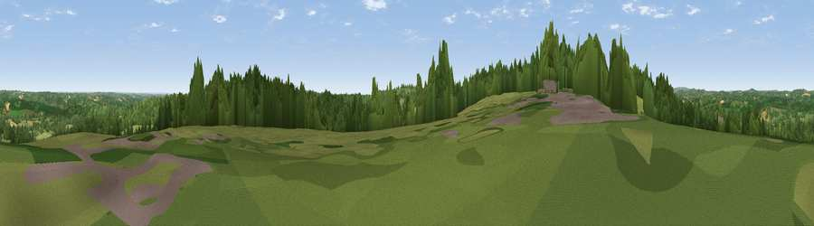

Viewpoint near Burwash Common
#19789 in England · top 21% of its area beats it · near Burwash CommonWhere it is
The exact computed spot (TQ 64075 23125). Click the marker for map links.
The view, rendered

A 360° render of this exact spot computed from the terrain model, tree cover and land cover — summer colours, afternoon light, calibrated against photographs of famous viewpoints. Real trees, hedges and buildings will differ in detail.
The panorama
Grey silhouette: terrain skyline in each direction (720 bearings, Earth curvature and refraction included). Dashed green: skyline with trees (+15 m) and buildings (+8 m) as obstacles. Blue strip: how far the ground is visible on each bearing.
Where the view opens
Wedge length = distance to the farthest visible ground on that bearing (vegetation-aware). Rings at 10, 25 and 50 km.
What fills the view
47% grassland · 45% woodland · 4% cropland · 3% built-up
Angular shares of the visible panorama (visual magnitude), not map area. Landscape diversity 0.42 (0–1 Shannon).
Key numbers
More beautiful places nearby
The staircase of upgrades: each row has a higher view potential than everything closer. Driving times are estimates from straight-line distance, calibrated against real road routing — check an actual route before setting out.
| Place | Direction | Drive | Score |
|---|---|---|---|
| Viewpoint near Cade Street | SW · 4 km | ~8 min | 56.7 |
| Brightling Obelisk [Brightling Down] | SE · 4 km | ~8 min | 69.1 |
| Viewpoint near Three Oaks | ESE · 21 km | ~36 min | 69.3 |
| Viewpoint near Wilmington | SSW · 22 km | ~36 min | 81.8 |
| Viewpoint near Willingdon | SSW · 22 km | ~36 min | 83.4 |
| Wilmington Hill | SSW · 22 km | ~36 min | 85.4 |
| Viewpoint near Alciston | SW · 23 km | ~38 min | 86.8 |
| Firle Beacon | SW · 23 km | ~38 min | 88.9 |
50.98415, 0.33616 · source: screening · position refined by local search. Computed location — check access rights before visiting.